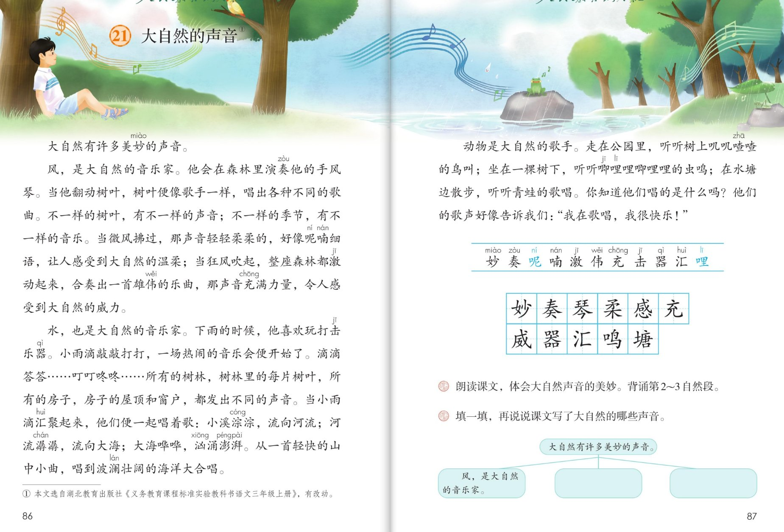
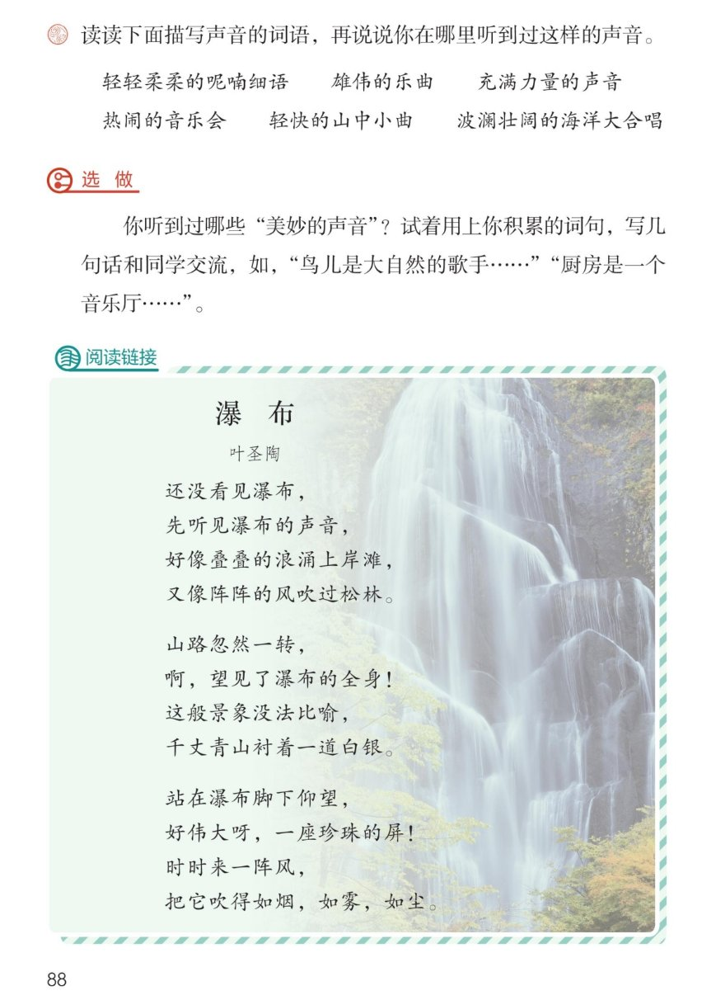

×
🔊 手机听不到声音怎么办？
① 先把手机
媒体音量调大 ，确认没开静音、没连蓝牙耳机；在微信里打开的，点右上角「⋯ → 用浏览器打开」。
② 还是没声音？到应用商店免费下载
Microsoft Edge 浏览器 （它自带朗读发声），用它打开本页面就能出声。
③ 换了 Edge 仍然没声音，说明这部手机的
硬件/系统不支持 网页朗读（多为老旧机型）；近几年买的新手机一般都能正常播放。
→ 打开声音自检
🎵 第 21 课《大自然的声音》· 有声图文带读
统编版语文 · 第七单元·阅读 · 课本 P86~88 · 素养升级版（对标 2022 课标第二学段）
课文 4 个自然段
素养目标 4
会认字 11
会写字 11
听写词 12
生动语言探究 6 卡
深入理解 8 题
阅读链接 《瀑布》
🎧 这样学（可随时点任意一句、一个字、一个词单独听）： ① 听读课文 ——一句一句读，读到哪一句哪一句发光；边读边想：大自然里谁在演奏？哪些词句特别生动？② 学字词 ——11 个会认字（呢、哩是多音字）、11 个会写字，点一个读一个。③ 词语·听写 ——听写 12 个词（读两遍→你写→报答案→听示范句），再听 4 组近义词辨析。④ 深入理解 ——8 道题（认知 / 理解 / 运用 / 拓展），先想后看。⑤ 大自然音乐会 ——风、水、动物轮流登台，再读一读阅读链接里的《瀑布》。🌟 本单元任务：感受课文生动的语言，积累喜欢的语句；留心生活，把自己的想法记录下来！
📌 本单元语文要素 ——单元导语（P83 照录）：大自然赐给我们许多珍贵的礼物，你发现了吗？ ；要点：感受课文生动的语言，积累喜欢的语句 ；留心生活，把自己的想法记录下来 。
🀄 文化自信
🀄 文化自信
聆听大自然这场奇妙音乐会，再读叶圣陶的《瀑布》——汉语把声音写成诗，感受祖国语言文字的美。
🗣 语言运用
🗣 语言运用
认识 11 个生字（呢、哩是多音字），会写 11 个字；积累呢喃细语、波澜壮阔等词语和滴滴答答、淙淙、潺潺等拟声词。
💡 思维能力
💡 思维能力
理清总起—分写的结构，说说课文写了大自然的哪些声音（课后题②）；能用上的句式说说别处的美妙声音。
🎨 审美创造
🎨 审美创造
有感情地朗读课文，想象音乐会的画面；用上积累的词句，写一写你听到的美妙的声音。
点段前的 ①②③ 听整段
🔁 跟读模式：关
👁 隐藏注音（自测用）
字卡上的拼音标的是本课要认的字，读音来自课本生字表
🎤 朗读要求（老师标准） 不添字、不漏字 ；有感情地朗读课文 ，体会大自然声音的美妙：微风的句子轻轻柔柔 ，狂风的句子雄伟有力 ；拟声词读出趣味 ；第 2~3 自然段 （课后题①）。
🤫 默读小提示（带着音乐会任务默读） 听读 ——点句子听老师读；第二步 默读 ——不出声、不指读，一边读一边想：每个自然段写了谁的声音？哪些语句特别生动？ 把它们画下来；第三步 朗读 ——体会大自然声音的美妙 ，背诵第 2~3 自然段。
①
大自然，有许多美妙的声音。
📌 这一段讲：总起：大自然有许多美妙的声音（全文围绕这一句来写）。
②
风，是大自然的音乐家。
他会在森林里演奏他的手风琴。
当他翻动树叶，树叶便像歌手一样，唱出各种不同的歌曲。
不一样的树叶，有不一样的声音；不一样的季节，有不一样的音乐。
当微风拂过，那声音轻轻柔柔的，好像呢喃细语，让人感受到大自然的温柔；当狂风吹起，整座森林都激动起来，合奏出一首雄伟的乐曲，那声音充满力量，令人感受到大自然的威力。
📌 这一段讲：风是大自然的音乐家：翻动树叶唱出不同的歌曲；微风轻轻柔柔像呢喃细语，狂风合奏出雄伟的乐曲充满力量。
③
水，也是大自然的音乐家。
下雨的时候，他喜欢玩打击乐器。
小雨滴敲敲打打，一场热闹的音乐会便开始了。
滴滴答答……叮叮咚咚……所有的树林，树林里的每片树叶；所有的房子，房子的屋顶和窗户，都发出不同的声音。
当小雨滴汇聚起来，他们便一起唱着歌：小溪淙淙，流向河流；河流潺潺，流向大海；大海哗啦啦，汹涌澎湃。
从一首轻快的山中小曲，唱到波澜壮阔的海洋大合唱。
📌 这一段讲：水也是大自然的音乐家：雨滴敲敲打打开起音乐会；小雨滴汇聚起来一起唱歌，从轻快的山中小曲唱到波澜壮阔的海洋大合唱。
④
动物是大自然的歌手。
走在公园里，听听树上叽叽喳喳的鸟叫；坐在一棵树下，听听唧哩哩唧哩哩的虫鸣；在水塘边散步，听听青蛙的歌声。
你知道他们唱的是什么吗？
他们的歌声好像告诉我们：我在唱歌，我很快乐！
📌 这一段讲：动物是大自然的歌手：鸟叫、虫鸣、青蛙的歌声；他们的歌声好像告诉我们，我在唱歌，我很快乐！
🤔 想一想（点我可跳过）
双页宽图自动占整行

第 86~87 页 · 课文与认字写字

第 88 页 · 课后练习与阅读链接
📖 人教版《语文》三年级上册 · 课本第 86~88 页 · 图片仅供个人学习，版权归人民教育出版社所有
📚 注释① 本文选自湖北教育出版社《义务教育课程标准实验教科书语文三年级上册》，有改动。
点一个字，听读音、词语和在课文里的句子
结构、部首、笔画与书写提示为通用规范，供参考，以教材和老师的指导为准
妙miào
美妙
左右 · 女 · 7画
女字旁横画变成提，右边的少字竖画要正，撇画舒展有力。
奏zòu
演奏
上下 · 大 · 9画
上面三个横撇捺要写紧凑，下面的天字撇捺要舒展，托住上部。
琴qín
手风琴
上下 · 王 · 12画
上面两个王字左小右大，下面的今字撇捺要舒展，别丢掉点。
柔róu
轻柔
上下 · 矛 · 9画
上面的矛字要写正，下面的木字横长竖正，撇捺像手臂一样舒展。
感gǎn
感受
上下 · 心 · 13画
上面的咸字要写紧凑，下面的心字要写得宽而稳，托住上部。
充chōng
充满
上下 · 亠 · 6画
点横要居中，下面的撇折撇和竖弯钩要写舒展，竖弯钩要圆。
威wēi
威力
半包围 · 女 · 9画
斜钩要写得长而有力，里面的女字要写扁，别忘上面的一小撇。
器qì
乐器
上下 · 口 · 16画
四个口要写得小而匀，中间的犬字横短撇捺舒展，整个字紧凑不散。
汇huì
汇聚
左右 · 氵 · 5画
三点水呈弧形排列，右边的匚框要方正，里面的一横写在正中。
鸣míng
鸟鸣
左右 · 口 · 8画
口字旁写小写高，右边的鸟字横折钩要有力，最后一横别丢。
塘táng
水塘
左右 · 土 · 13画
土字旁横短竖长、末笔变提，右边的唐字上紧下松，口字写扁。
点一行，听读这一组词语
妙 美妙 奇妙 妙不可言
奏 演奏 伴奏 节奏
器 乐器 器乐 打击乐器
汇 汇聚 汇成 汇合
读两遍 → 你在纸上写 → 报答案 → 听示范句
准备听写 · 共 12 个词
○ ○ ○
点下面的「开始听写」，听到一个词就写一个词。
▶ 开始听写
🔁 再读一遍
👁 看答案
点词听读，点句子听示范句，再自己说一句
1 美妙 课文词
示范句：大自然有许多美妙的声音。
✏️ 我也能说：大自然有许多怎样的声音。
2 演奏 课文词
示范句：风会在森林里演奏他的手风琴。
✏️ 我也能说：风在森林里干什么。
3 手风琴 课文词
示范句：风会演奏他的手风琴。
✏️ 我也能说：风演奏的是什么。
4 轻柔 课文词
示范句：那声音轻轻柔柔的，好像呢喃细语。
✏️ 我也能说：那声音怎么样。
5 感受 课文词
示范句：让人感受到大自然的温柔。
✏️ 我也能说：让人感受到什么。
6 充满 课文词
示范句：那声音充满力量。
✏️ 我也能说：那声音怎么样。
7 威力 课文词
示范句：令人感受到大自然的威力。
✏️ 我也能说：令人感受到什么。
8 乐器 课文词
示范句：下雨的时候，水喜欢玩打击乐器。
✏️ 我也能说：水喜欢玩什么。
9 汇聚 课文词
示范句：当小雨滴汇聚起来，他们便一起唱着歌。
✏️ 我也能说：小雨滴怎么样起来。
10 鸟鸣 课文词
示范句：听听树上叽叽喳喳的鸟鸣。
✏️ 我也能说：听听怎样的鸟鸣。
11 水塘 课文词
示范句：在水塘边散步，听听青蛙的歌声。
✏️ 我也能说：在哪里散步。
12 音乐会 课文词
示范句：小雨滴敲敲打打，一场热闹的音乐会便开始了。
✏️ 我也能说：一场怎样的音乐会开始了。
相同点 / 不一样在哪 / 各造一句
美妙 — 奇妙
相同：都表示美好、让人惊叹。
不一样：美妙 偏重美好动听，多形容声音、感受；奇妙 偏重稀奇神妙，多形容事物有趣、出乎意料。
美妙：大自然有许多美妙的声音。
雄伟 — 宏伟
相同：都表示气势大、有气魄。
不一样：雄伟 偏重雄壮有力量，多形容声音、山川；宏伟 偏重规模宏大，多形容建筑、计划。
雄伟：狂风合奏出一首雄伟的乐曲。
热闹 — 喧闹
相同：都表示场面活跃、声音杂。
不一样：热闹 是中性偏褒义，多形容场面欢快；喧闹 偏重声音大而杂，有时带一点吵。
热闹：一场热闹的音乐会便开始了。
汇聚 — 汇集
相同：都表示聚在一起。
不一样：汇聚 常指从四面八方聚拢，多用于水流、人流；汇集 偏重聚到一处，用法更广。
汇聚：当小雨滴汇聚起来，他们便一起唱着歌。
前两组正是课后题③的描写声音词语
描写声音的词语（课后题③） 轻轻柔柔的呢喃细语 雄伟的乐曲 充满力量的声音
更多的声音词语（课后题③） 热闹的音乐会 轻快的山中小曲 波澜壮阔的海洋大合唱
课文的拟声词 滴滴答答 叮叮咚咚 叽叽喳喳 唧哩哩 淙淙 潺潺 哗啦啦
课文的好听短语 轻轻柔柔 汹涌澎湃 波澜壮阔 呢喃细语
点一张卡，听这条阅读线索
本单元我们要学的新本领：感受课文生动的语言，积累喜欢的语句 ——六张卡片，看看大自然音乐会上的生动语言藏在哪儿。
🌲 总起句统领全文
大自然，有许多美妙的声音——全文都围绕这一句写：风、水、动物的声音，读的时候先记住这句总起句。
🎭 拟人让声音活起来
风是音乐家，水也是音乐家，动物是歌手——把大自然当成人来写，声音就像音乐会一样热闹，这就是生动的语言。
⚖️ 对比句有画面
微风轻轻柔柔像呢喃细语，狂风雄伟的乐曲充满力量——一轻一重对比着读，风的温柔和威力全写出来了。
🎵 排比句像唱歌
小溪淙淙，流向河流；河流潺潺，流向大海；大海哗啦啦，汹涌澎湃——三个短句排着队，一句比一句响亮。
🔔 拟声词最好听
滴滴答答、叮叮咚咚、叽叽喳喳、唧哩哩——拟声词就是声音的样子，读一读就听见啦，把它们抄进积累本。
💬 结尾句藏着快乐
我在唱歌，我很快乐！——歌声里藏着快乐，大自然的礼物就是这些美妙的声音，读出你的快乐吧。
标「答案不唯一」的题，说得有道理都对
认知 课文写了大自然的哪些声音？（课后题②照录）看解析
🤔 想一想
解析：
课文写了风的声音——森林里的手风琴；水的声音——滴滴答答的音乐会，小溪淙淙、河流潺潺、大海哗啦啦；动物的声音——鸟叫、虫鸣、青蛙的歌声。🌈 先记住总起句，再一段一段找。
🌈 答案不唯一，说得有道理都对
认知 大自然里还有哪些美妙的声音？说给同学听。看解析
🤔 想一想
解析：
示范：厨房里锅碗瓢盆叮叮当当，教室里沙沙的写字声，操场上的加油声，下雨打在雨伞上嗒嗒的声音。🌈 结合自己的生活说，有道理都对。
🌈 答案不唯一，说得有道理都对
理解 当微风拂过……让人感受到大自然的温柔；当狂风吹起……令人感受到大自然的威力。——这两句写出了风的什么特点？怎么写出来的？看解析
🤔 想一想
解析：
写出了风有时温柔、有时威力大。作者把两种风对比着写：微风轻轻柔柔像呢喃细语，狂风合奏雄伟的乐曲——一柔一刚，画面就出来了。🌈 说出对比、说出自己的感受都对。
🌈 答案不唯一，说得有道理都对
理解 小溪淙淙，流向河流；河流潺潺，流向大海；大海哗啦啦，汹涌澎湃。——这样的句子读起来有什么感觉？看解析
🤔 想一想
解析：
像唱歌一样，一句接着一句，声音越来越大，水越来越多——从轻快的山中小曲唱到波澜壮阔的海洋大合唱。🌈 答案不唯一，说出排比、越读越响亮都对。
🌈 答案不唯一，说得有道理都对
理解 读读下面描写声音的词语，再说说你在哪里听到过这样的声音。（课后题③照录）◇ 轻轻柔柔的呢喃细语 雄伟的乐曲 充满力量的声音 ◇ 热闹的音乐会 轻快的山中小曲 波澜壮阔的海洋大合唱看解析
🤔 想一想
解析：
示范：轻轻柔柔的呢喃细语——妈妈哄小宝宝睡觉的声音；充满力量的声音——运动会上大家的加油声；热闹的音乐会——过年放鞭炮、敲锣打鼓的声音。🌈 结合生活说，说出在哪里听到就行。
🌈 答案不唯一，说得有道理都对
运用 你听到过哪些美妙的声音？试着用上你积累的词句，写几句话和同学交流。（教材 P88 选做照录）看解析
🤔 想一想
解析：
写作支架：第一步，想好你要写哪里的声音（厨房、校园、雨后、菜市场……）；第二步，用上课文的句式开头——xx，是大自然的音乐家，或者，xx是一个音乐厅；第三步，用上一两个拟声词或描写声音的词语；第四步，读给同学听。🌈 例：鸟儿是大自然的歌手……厨房是一个音乐厅……
🌈 答案不唯一，说得有道理都对
运用 背诵第 2~3 自然段有什么好方法？（课后题①相关）看解析
🤔 想一想
解析：
方法一，按课文顺序记：风先翻动树叶，再写微风，再写狂风；水先写雨滴，再写汇聚，再写小曲和大合唱。方法二，抓住拟声词背：滴滴答答、叮叮咚咚、淙淙、潺潺、哗啦啦。方法三，想象画面背：闭上眼睛听森林音乐会。🌈 用哪种方法都行，背熟最重要。
🌈 答案不唯一，说得有道理都对
拓展 课文为什么能把大自然的声音写得这么生动？找出你最喜欢的句子读给大家听。看解析
🤔 想一想
解析：
因为作者把风、水、动物当成音乐家和歌手来写，用了拟人、对比、排比，还有好多拟声词，让我们好像真的听见了音乐会。🌈 先说说喜欢的句子，再说说它好在哪里，就是最好的答案。
🌈 答案不唯一，说得有道理都对
💬 背诵支架（课后题①）：总起 美妙的声音 → 风 音乐家（微风/狂风对比）→ 水 音乐家（雨滴/汇聚）→ 动物 歌手 → 快乐的结尾。轮到你了：闭上眼睛，把这场音乐会讲给家人听。
点一个角色，听他（她）的台词
🎭 旁白
大自然，有许多美妙的声音。 / 你知道他们唱的是什么吗？
💬 演员要读出音乐会的感觉 ：微风的句子轻轻柔柔，狂风和合唱的句子雄伟有力
🎭 风音乐家
风，是大自然的音乐家。他会在森林里演奏他的手风琴。当他翻动树叶，树叶便像歌手一样，唱出各种不同的歌曲。 / 当微风拂过，那声音轻轻柔柔的，好像呢喃细语，让人感受到大自然的温柔；当狂风吹起，整座森林都激动起来，合奏出一首雄伟的乐曲，那声音充满力量，令人感受到大自然的威力。
💬 演员要读出音乐会的感觉 ：微风的句子轻轻柔柔，狂风和合唱的句子雄伟有力
🎭 水音乐家
水，也是大自然的音乐家。下雨的时候，他喜欢玩打击乐器。小雨滴敲敲打打，一场热闹的音乐会便开始了。 / 当小雨滴汇聚起来，他们便一起唱着歌：小溪淙淙，流向河流；河流潺潺，流向大海；大海哗啦啦，汹涌澎湃。从一首轻快的山中小曲，唱到波澜壮阔的海洋大合唱。
💬 演员要读出音乐会的感觉 ：微风的句子轻轻柔柔，狂风和合唱的句子雄伟有力
🎭 动物歌手
动物是大自然的歌手。走在公园里，听听树上叽叽喳喳的鸟叫；坐在一棵树下，听听唧哩哩唧哩哩的虫鸣；在水塘边散步，听听青蛙的歌声。 / 他们的歌声好像告诉我们，我在唱歌，我很快乐！
💬 演员要读出音乐会的感觉 ：微风的句子轻轻柔柔，狂风和合唱的句子雄伟有力
🎭 小点评家
风、水、动物都是大自然的音乐家和歌手——课文把大自然当成音乐会来写，拟声词读出来最好听。背诵第2~3自然段时，抓住滴滴答答、叮叮咚咚这些拟声词，一句一句连起来背。
💬 演员要读出音乐会的感觉 ：微风的句子轻轻柔柔，狂风和合唱的句子雄伟有力
点一行，听一行诗（P88 照录）
大自然的声音还被写成了诗——还没看见瀑布，先听见瀑布的声音 ，和课文一样，都是先写听、再写看。把喜欢的诗句读给同学听。
第一节 · 只闻其声
还没看见瀑布，
先听见瀑布的声音，
好像叠叠的浪涌上岸滩，
又像阵阵的风吹过松林。
第二节 · 一见全貌
山路忽然一转，
啊，望见了瀑布的全身！
这般景象没法比喻，
千丈青山衬着一道白银。
第三节 · 脚下仰望
站在瀑布脚下仰望，
好伟大呀，一座珍珠的屏！
时时来一阵风，
把它吹得如烟，如雾，如尘。
每题给自己打 1~3 颗星
1. 我能正确认读 11 个会认字（含多音字呢、哩），规范书写 11 个会写字。 ☆ ☆ ☆
2. 我能有感情地朗读课文，读出微风和狂风的不同，并背诵第 2~3 自然段。 ☆ ☆ ☆
3. 我能说出课文写了大自然的哪些声音，填好课后题②的图。 ☆ ☆ ☆
4. 我能找出觉得生动的语句，说说它好在哪里，并抄进积累本。 ☆ ☆ ☆
5. 我能用上积累的词句，写几句话介绍我听到的美妙的声音。 ☆ ☆ ☆
✍️ 选做 ：你听到过哪些美妙的声音 ？试着用上你积累的词句，写几句话和同学交流。鸟儿是大自然的歌手…… 厨房是一个音乐厅…… 哪里的声音 （厨房、校园、雨后、菜市场……）；一两个拟声词 或描写声音的词语；读给同学听 。